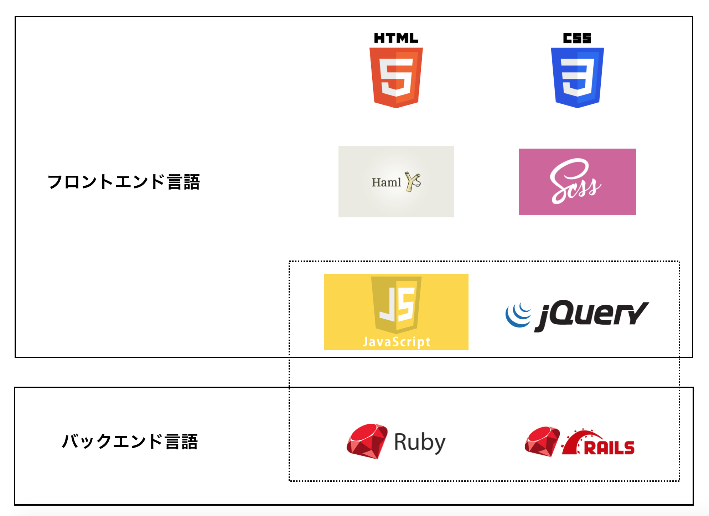
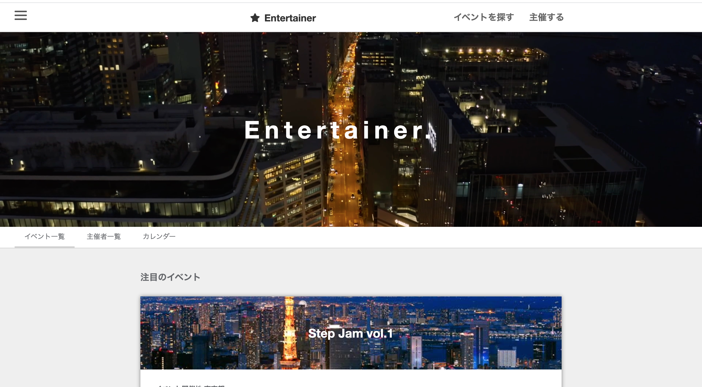
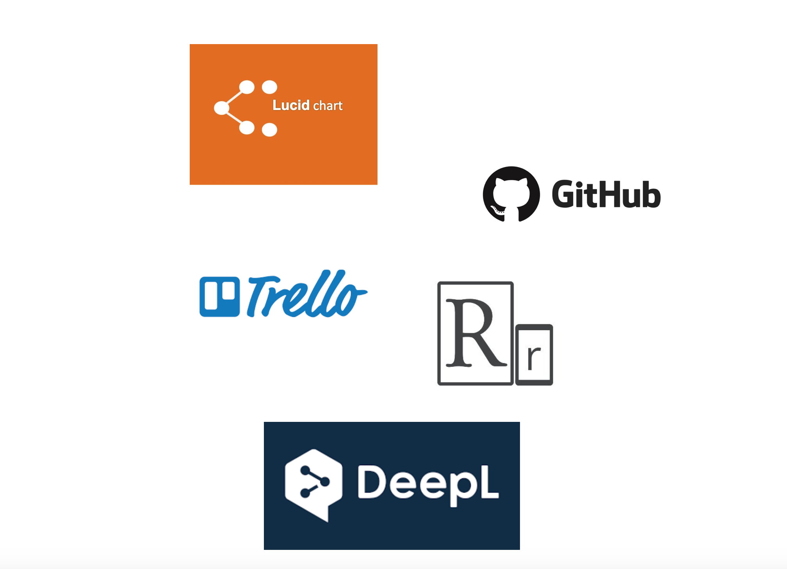
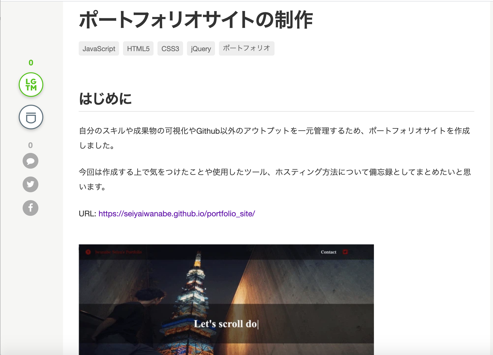

-

学んだ言語
ポートフォリオ制作の過程で学んだ言語一覧です。
【 フロントエンド（マークアップ） 】
・HTML5, CSS, haml, Sass
・Javascrpt (フレームワーク: jQuery) 【 バックエンド 】 ・Ruby (フレームワーク: Ruby on Rails) -

ポートフォリオ作品
全国のエンターテイナーと企業のマッチングサービス。
ダンスやモデル、歌などのスキルを持つ人達と
広告宣伝やイベントを主催する企業をつなぐ
プラットフォームサービスです。
-----------------------------------------------------------------------------
バージョン管理システム: git
インフラ: aws(EC2, , S3, , RDS, Route53)
データベース: Mysql, MariaDB
Webサーバー: nginx
アプリケーションサーバー: unicorn
静的コード解析ツール: RuboCop
デプロイ自動化ツール: Capistrano
ドメイン: entertainer-sample.com（画像がリンクになっています） -

使用ツール
使用ツール一覧
クラウド作図サービス(ER図作成): Lucidchart
バージョン管理システム: Github
タスク管理: Trello
Web制作ツール: Responsively
機械翻訳システム: DeepL -

Qiitaで発信
主にアプリ開発中の気づきを発信しています。
累計で20記事を執筆しました。